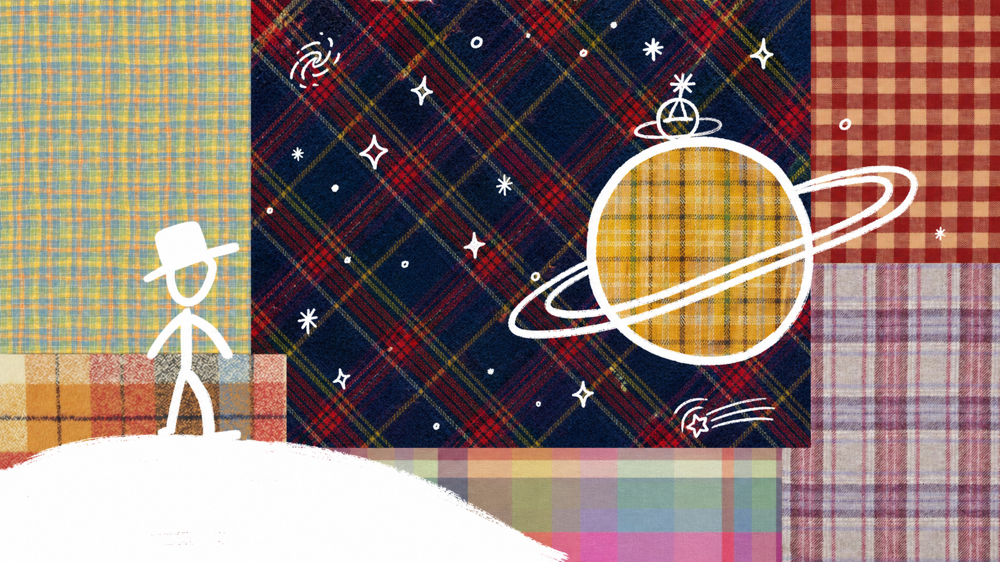
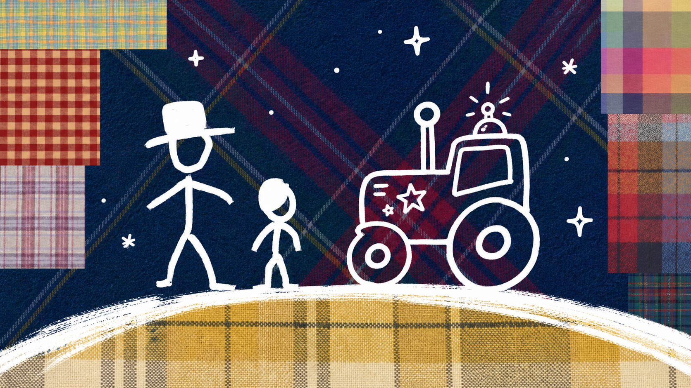
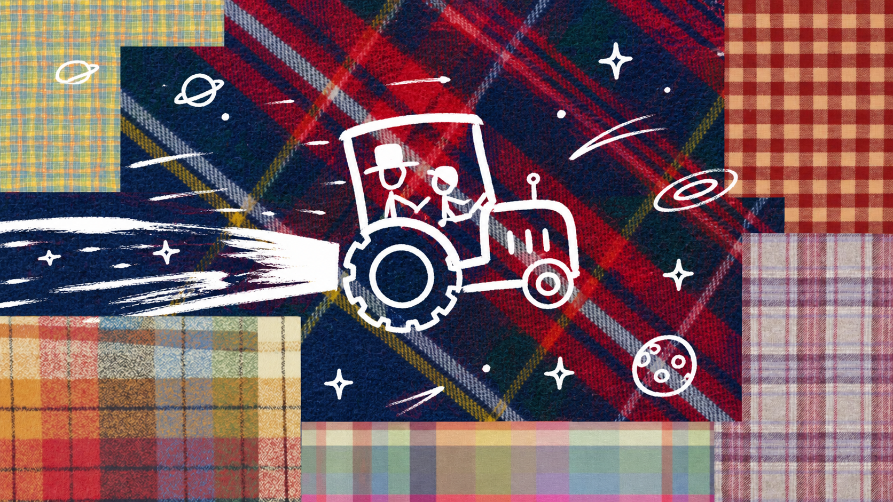
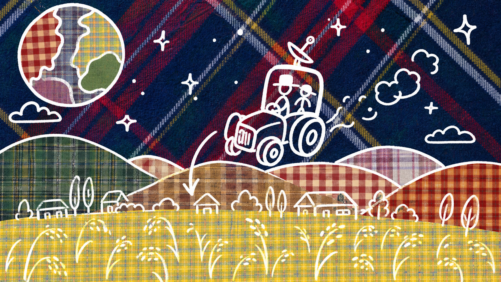
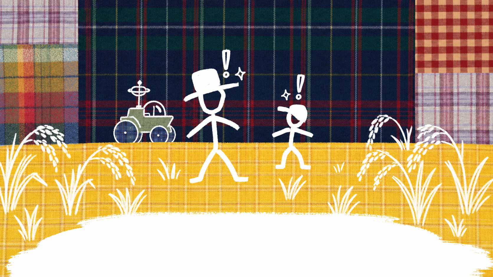
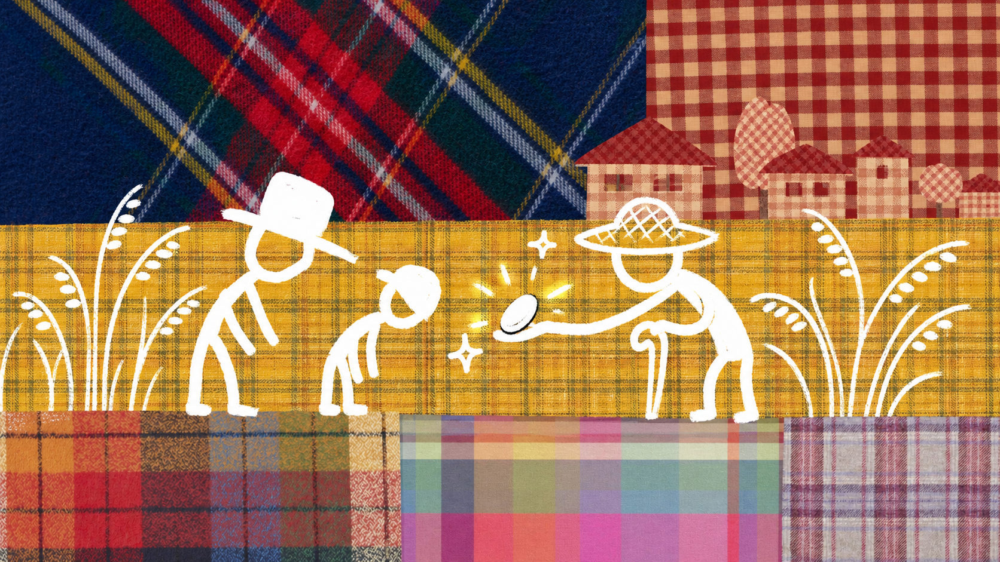
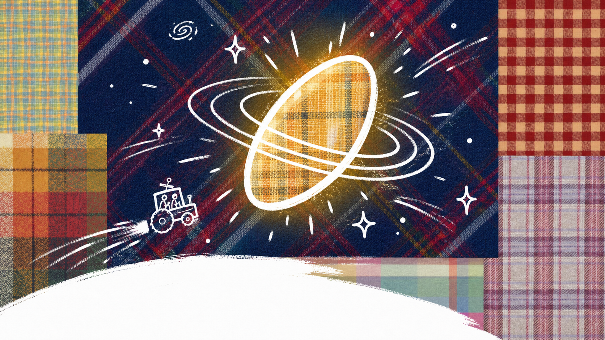
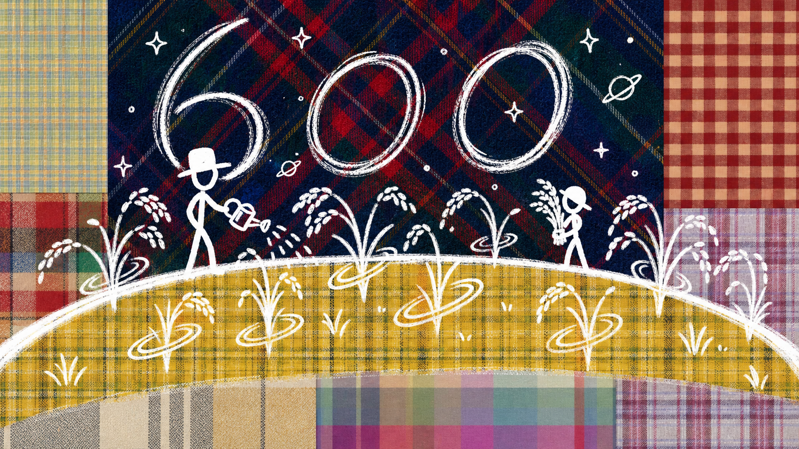
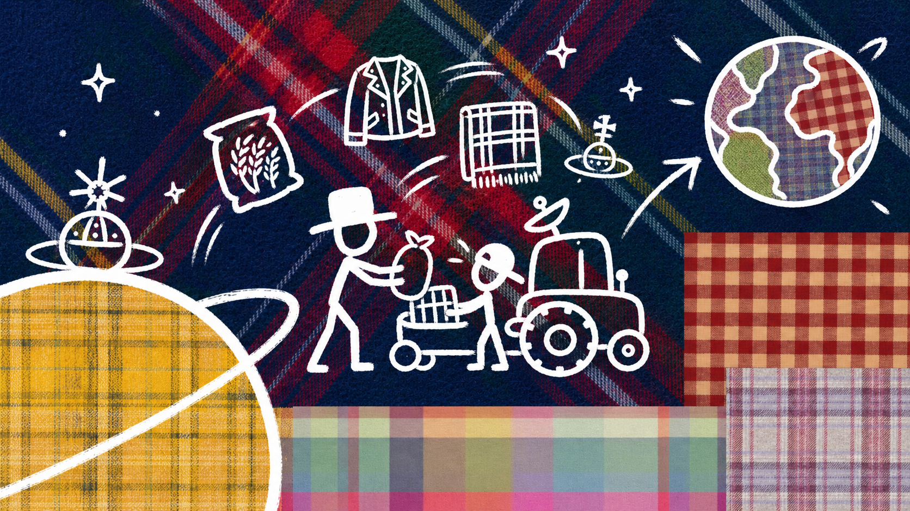
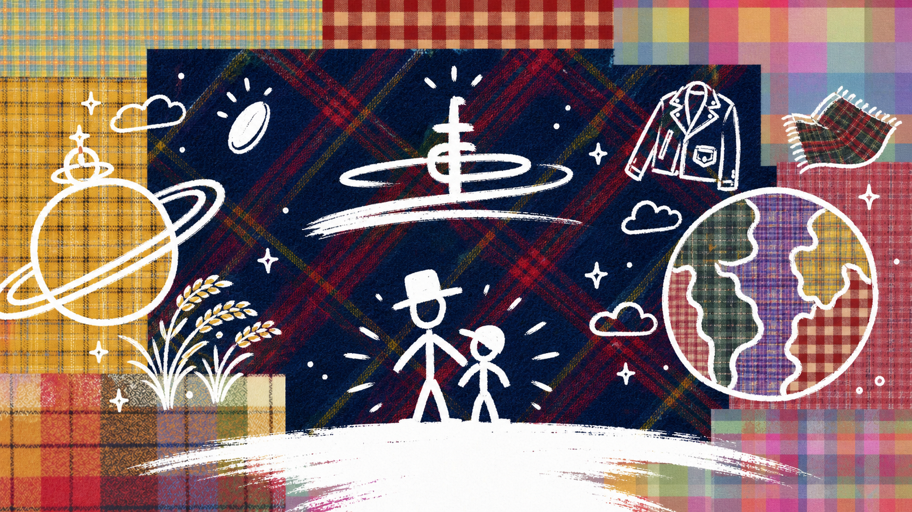

Vivienne Westwood × 이천쌀
비비안 행성에 불시착한
이천 임금님표 쌀
우주 어딘가의 오브 행성에서 출발한 여정이, 600년을 이어온 이천 임금님표 쌀과 만나기까지. 한 알의 쌀이 오브가 되는 콜라보의 이야기입니다.
Story Board
Timeline

Orb Planet
비비안 행성
비비안의 세계가 시작되는 별. 오브의 빛이 처음 켜지고, 콜라보의 여정이 출발합니다.

Orb Village
오브들의 행성
오브들이 함께 살아가는 장면. 낯선 우주 속에서도 서로의 리듬을 맞추며 세계를 이룹니다.

Space Ride
우주를 가르다
별 사이를 가로지르는 비행. 오브는 더 넓은 세계를 향해 조용히 속도를 높입니다.

Arrival · Icheon
이천에 불시착
여정의 끝에서 만난 이천의 풍경. 따뜻한 땅과 정직한 농업의 결이 첫 인상을 남깁니다.

Golden Field
황금빛 들판
끝없이 펼쳐진 황금빛 쌀 들판. 오브는 처음 보는 풍요에 마음을 빼앗깁니다.

Farmer & Grain
임금님표 쌀을 만나다
농부의 손끝에서 다듬어진 한 알. 시간과 정성이 쌓여 특별한 존재가 됩니다.

Rice in Space
쌀, 오브가 되다
한 알의 쌀이 오브의 형태로 다시 태어납니다. 전통은 여기서 새로운 상징을 얻습니다.

600 Years
600년의 시간
오랜 세월 이어진 재배와 진상의 역사. 쌀 한 톨 안에 축적된 시간이 보입니다.

First Trade
두 세계의 첫 만남
비비안의 상징과 이천의 전통이 맞닿는 순간. 콜라보는 여기서 실제가 됩니다.

End Card
Vivienne Westwood × 이천쌀
비비안 행성에 불시착한 이천 임금님표 쌀. 이제 한국에서 이 이야기를 만나보세요.